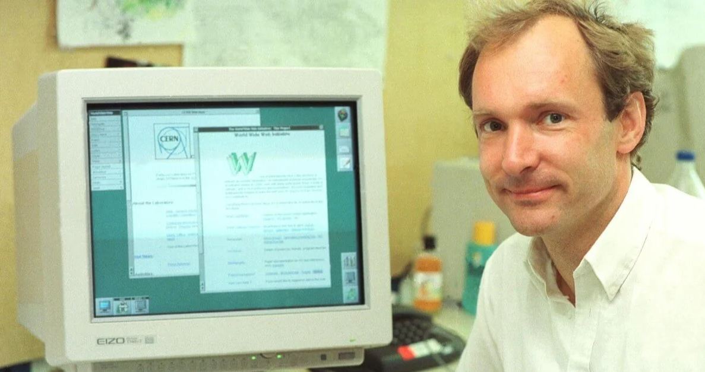

Het Ontstaan van het Internet

Het internet, zoals we het nu kennen, heeft een fascinerende geschiedenis die teruggaat tot de jaren 1960.
De Beginjaren
Het internet begon als een project van het Amerikaanse ministerie van Defensie. In 1969 werd ARPANET (Advanced Research Projects Agency Network) opgericht om wetenschappers en onderzoekers in staat te stellen informatie te delen en te communiceren via een netwerk van computers. ARPANET gebruikte een techniek genaamd packet switching, waarbij gegevens in kleine pakketjes werden opgedeeld en via verschillende routes naar hun bestemming werden gestuurd.
De Jaren 1970 en 1980
In de jaren 1970 werden verschillende netwerken ontwikkeld, zoals het NPL-netwerk in het Verenigd Koninkrijk en het CYCLADES-netwerk in Frankrijk. Deze netwerken gebruikten ook packet switching en legden de basis voor de ontwikkeling van protocollen die communicatie tussen verschillende netwerken mogelijk maakten.
In 1983 werd het TCP/IP-protocol (Transmission Control Protocol/Internet Protocol) geïntroduceerd, wat de standaard werd voor gegevensoverdracht op het internet. Dit protocol maakte het mogelijk om verschillende netwerken met elkaar te verbinden, wat leidde tot de creatie van een wereldwijd netwerk van netwerken, oftewel het internet.
De Opkomst van het World Wide Web
In 1989 stelde Tim Berners-Lee, een Britse wetenschapper, een systeem voor dat bekend zou worden als het World Wide Web (WWW). Het WWW maakte gebruik van hypertext om documenten te koppelen en toegankelijk te maken via het internet. In 1991 werd de eerste website gelanceerd, en het WWW begon snel aan populariteit te winnen. 
De Jaren 1990 en Verder
In de jaren 1990 werd het internet steeds toegankelijker voor het grote publiek. Webbrowser zoals Mosaic en later Netscape Navigator maakten het surfen op het web eenvoudiger en gebruiksvriendelijker. Bedrijven begonnen websites te maken, en e-commerce begon te groeien.
In de jaren 2000 en 2010 bleef het internet zich ontwikkelen met de opkomst van sociale media, streamingdiensten, en mobiele technologie. Het internet werd een integraal onderdeel van het dagelijks leven van mensen over de hele wereld.
Conclusie
Het internet is geëvolueerd van een klein netwerk van onderzoekers naar een wereldwijd fenomeen dat communicatie, informatie-uitwisseling en handel revolutioneerde. Het blijft zich ontwikkelen en vormt een cruciaal onderdeel van de moderne samenleving.